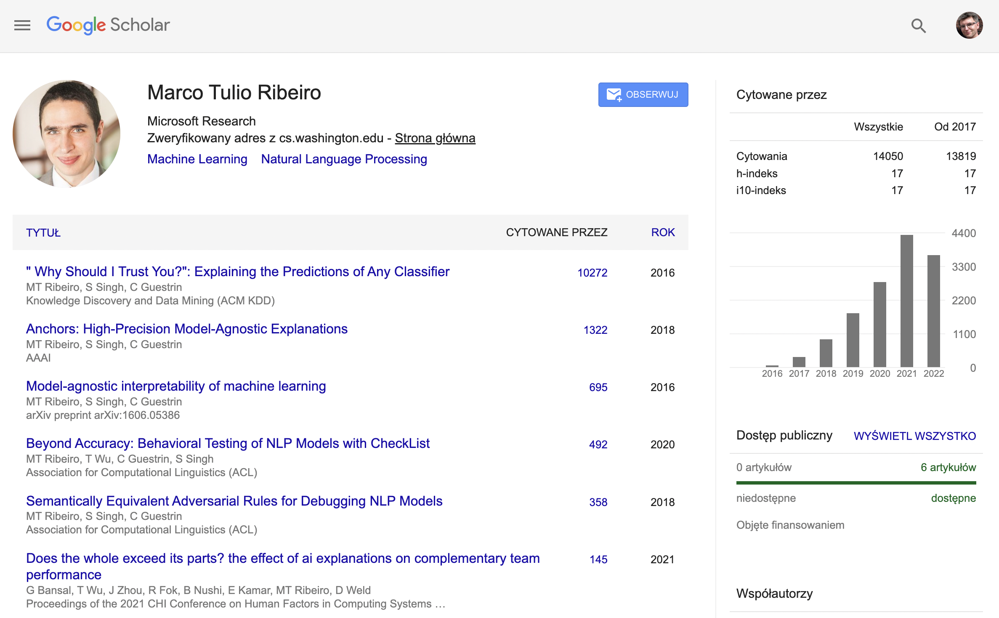
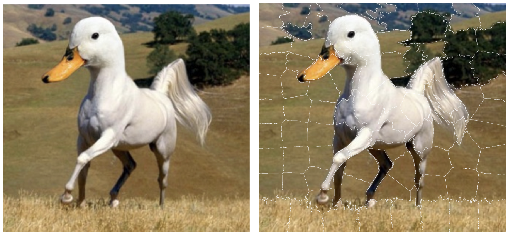
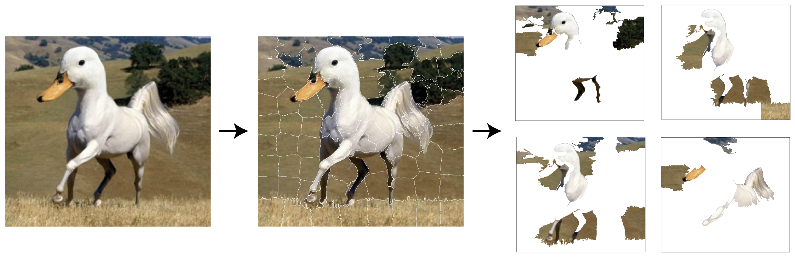
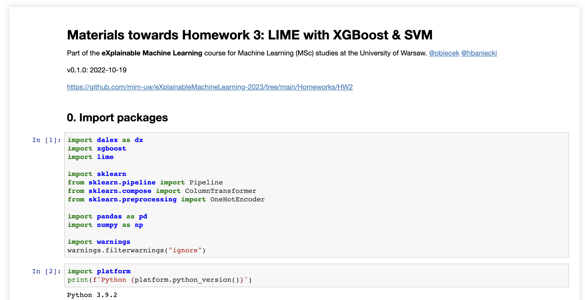

LIME and friends
eXplainable AI
Przemysław Biecek
Machine Learning @ MIMUW 2022

Paper of the day
“Why Should I Trust You?”: Explaining the Predictions of Any Classifier
- In this course, you will learn about the XAI methods and tools, but also about selected papers and researchers.
- Today we will talk about LIME method, so the article of the day will be the LIME paper from 2016: “Why Should I Trust You?” Explaining the Predictions of Any Classifier
LIME paper in numbers
- The LIME paper has over 10k citations
- The
limepython package has today over 10k start on github - The husky example is now the most frequently presented example calling for debugging models (more on this later)

Why LIME?
- Gives sparse explanations based on an interpretable data space
- Very popular, especially for computer vision / NLP tasks
- Very tempting approach – explain a complex model by a simpler surrogate (although intuition can be deceptive here)


- Figures below are from the paper Explainable AI Methods - A Brief Overview
XAI pyramid
- Thinking about the XAI pyramid, we are still in the same group of solutions as SHAP, i.e. local explanations focused on the importance of features
- As with SHAP, local LIME explanations can be used to explain the global model

XAI pyramid
- LIME is based on one of the three fundamental approaches to explanation of predictive models.
- LIME corresponds to panel B – approximation with linear surrogate model to get some understanding about black-box model behavior around \(x\)

LIME - Local Interpretable Model-agnostic Explanations
Start with Why
Desired characteristics of explanations (from LIME paper)
- Explanations should be easy to undestand = interpretable (simple, sparse, based on interpretable features) for a user
- Good explanation should be model-agnostic, i.e. does not depend on model structure. This will help to compare explanations for different models
- Local fidelity of explanations
Explanation process. Figure from LIME paper
Core idea
The core ideas behind LIME are:
- Input to the model will be transformed into an interpretable feature space
- Local model behaviour will be explained by approximating it by an interpretable surrogate model (e.g. a shallow tree or a linear regression model)
- Local approximation is trained on artificial points generated from the neighborhood of the observation of interest \(x\)

Figure from EMA book
Fidelity-Interpretability Trade-off
The explanation will be a model \(g\) that approximates the behavior of the complex model \(f\) and is as simple as possible
\[ \hat g = \arg \min_{g \in G} L\{f, g, \pi(x)\} + \Omega(g) \]
where
- \(f()\) is a model to be explained
- \(x\) is an observation of interest
- \(G\) is a class of interpretable models
- \(\hat g\) is an explanation, a model from class \(G\)
- \(\Omega(g)\) is a penalty function that measures complexity of models from \(G\). For regression models it could be the number of non-zero coefficients, for trees the number of nodes. For simplicity, we will consider a family of models \(G\) such that all models in this family have complexity \(K\)
- \(L()\) a function measuring the discrepancy between models \(f\) and \(g\) in the neighborhood \(\pi(x^*)\)
LIME Algorithm
Explanations can be calculated with a following instructions.
- Let \(x'\) = \(h\)(x) be a version of \(x\) in the interpretable data space
- for i in 1…N {
- z’[i] =
sample_around(x’) - y’[i] = \(f\)(z’[i])
- w’[i] =
similarity(x’, z’[i]) - }
- return
K-LASSO(y’, x’, w’)
where
- \(x\) – an observation to be explained
- \(N\) – sample size needed to fit a glass-box model
- \(K\) – complexity, the maximum number of variables in the glass-box model
similarity– a distance function in the original data spaceK-LASSO– a weighted LASSO linear-regression model that selects K variables- w’ – weights that measure of the similarity between original observation \(x\) and new artificially generated observations. Weights may be based on \(\exp(-d)\) function, where \(d\) is an Euclidean distance, cosine distance or other distance measure (depending on the data structure),
Example: Duck or horse? 1/4
Let’s see how LIME can be used to solve this problem.
Initial settings
- Let’s consider a VGG16 neural network trained on the ImageNet data
- Input size are images 244 \(\times\) 244 pixels. We have 1000 potential categories for the training data
- The input space is of dimension 3 \(\times\) 244 \(\times\) 244, i.e. it is a 178 608-dimensional space
- We need to translate the input to the interpretable data space, here image will be transformed into superpixels, which are treated as binary features (see an example later)
- In this example \(f()\) operates on space with \(178 608\) dimensions, while the glass-box model \(g()\) operates on a binary space with \(100\) dimensions
- We will ask for explanations of complexity 10
Example: Duck or horse? 2/4
Interpretable data space
- Interpretable data space is a binary space that encodes presence or absence of selected features
- The interpretable space can be constructed globally (e.g. for tabular data) or locally (e.g. for images)
- For image data, the most common approach constructs an interpretable data space for each observation separately by using a segmentation algorithm.
- The result is the division of the input image into a certain number of regions/called superpixels

Example: Duck or horse? 3/4
Sampling around x
- We sample around the observation x’ in the interpretable space
- Since it’s a binary space in which an observation \(x\) is represented by a vector of ones
- Sampling corresponds to selecting randomly coordinates that will be flipped to zero
- We need N of such new observations

Example: Duck or horse? 4/4
Fitting of an interpretable model
- For new data, we make predictions with model \(f()\)
- And then for the observations in the interpretable representation we train a K-LASSO model which will have \(K\) non-zero coefficients
- We can use the \(R^2\) coefficient to assess the quality of fit of the model \(g()\)
Interpretable data representations
How to transform the input data into a binary vector of shorter length?
- For image data interpretable feature space is commonly based on superpixels, i.e. through image segmentation
- For text data, words or groups of words are frequently used as interpretable variables
- For tabular data, continuous variables are often discretized to obtain interpretable bianary variables. In the case of categorical variables, combination of levels is used to get bianary variables.
Example from LIME github
Model debugging 1/3
- There are many reasons to know and develop XAI techniques
- One of them is the ability to debug the model
- The most well-known example is improving the performance of a network that misclassified the following image
- How LIME can help here?
Figure from presentation about LIME by Sameer Singh
Model debugging 2/3
- The model works very well. Classification between husky of wolf in accurate in almost every image except one. Why?
Figure from presentation about LIME by Sameer Singh
Model debugging 3/3
- Can LIME’s explanation help us find the source of the problem?
- It turns out that in the case of classification as a wolf, the important feature is the snow in the background
- Effectively, the model has learned to recognize snow in the background and so classifies as a wolf class
- This is not a feature that people use for classification wolf/husky. But would you sacrifice the quality of the model to remove the dependence on using the background for classification?
Figure from presentation about LIME by Sameer Singh
- This story has a happy ending. Proper training that cancelled the model dependency on the snow feature improved the accuracy of the model
From Local to Global
Explaining through examples
The LIME method was designed to explain the model’s behavior locally, around the observation of interest. But we are often interested in knowing or at least getting an intuition about how the model works globally.
The LIME paper proposes two approaches to globalizing LIME. Both are based on selecting some subset of observations that will be fairly representative of the entire dataset. Assuming the user has time to look at LIME explanations for B observations, the question is how to select them.
Submodular pick (SP) algorithm
Criterion for selecting observations for global explanations
\[ c(V, W, I) = \sum_{j \in P'} 1_{\exists i\in V; W_{i,j} \neq 0} I_j \]
where \(I_j\) is feature importance for feature \(i\) while \(P'\) is a set of features in an interpretable data space.
The LIME paper presents a user-study example where the submodular picks method most effectively convinces the user how the model works.
Can non-experts improve a classifier?
- The LIME paper describes the results of several experiments involving humans subjects
- Very interesting results involved using explanations to improve the model, even if the improvement is generated by the knowledge and actions of non-ML-experts
- The experiment was based on a model for a classification task based on text data
- The explanations of the model generated by the LIME method were then shown to the participants of the experiment. That is, for each observation, the relevant words were highlighted
- Participants could determine that some of these words were artifacts and should not be used by the model
- The model was then trained again on the remaining features, with the artifacts removed
- It turns out that such feature engineering using experts led to better results after several rounds
Figure from the LIME paper
Anchors
Anchors: High-Precision Model-Agnostic Explanations 1/3
- A limitation of the LIME method is the assumption that locally the behavior of a complex model can be explained by approximating it with an additive linear regression model.
- But if there are significant interactions in the model then a local approximation with an additive model will not reflect the model’s behavior well.
- In the example below, we can see that the word ‘not’ has no additive effect, so its effect does not additively compound with the word ‘bad’.
- To explain the model’s behavior, we need a rule that contains both variables.
Figure from the Anchors paper
Anchors: High-Precision Model-Agnostic Explanations 2/3
In Anchors: High-Precision Model-Agnostic Explanations, the authors present an alternative explanation method that finds the shortest subset of conditions sufficient to explain the local behavior of the model.
The intuition behind the anchor is as follows: for a given observation anchors are “sufficient” conditions for a model prediction.
More formally: \(A\) is a rule = set of logical conditions. We will say that \(A\) is an anchor if \(A(x) = 1\), i.e. observation \(x\) fulfill all these conditions and probability that rule \(A\) is true around \(x\) is higher than \(\tau\), i.e.
\[ E_{D(z|A)}[1_{f(x) = f(z)}] \geq \tau, \]
where \(D(z|A)\) is a distribution of points that fulfill the rule \(A\).
Figure from the Anchors paper
Anchors: High-Precision Model-Agnostic Explanations 3/3
- ,,sufficient’’ explanation
- If these segments are in the picture then it is classified as a beagle
Figure from the Anchors paper
LORE
LORE: Local Rule-Based Explanations
There are many more explanations that analyze the local neighborhood around a point \(x\). An interesting variant is the LORE method for local explanations that uses few interesting concepts, such as counterfactual explanations.
The way LORE explanations are constructed is the following:
- Use a genetic algorithm to construct a balanced set of points around \(x\). In this set we have as many representatives of class \(1\) as \(0\)
- Based on this data, a decision tree is trained
- Two types of rules are drawn from this decision tree. (1) an explanation, that is, a rule corresponding to the path for the observation \(x\) and (2) a counterfactual explanation, that is, a set of rules saying what needs to be changed in \(x\) so that the predicted class is not \(f(x)\)
Figure from the LORE paper
Take-home message
- LIME method explains local model behavior with interpretable linear surrogate model
- LIME generates sparse explanations, with K features
- Explanations use an interpretable feature space, like superpixels for image data, tokens for NLP, quartiles for numeric tabular data
- Sampling strategy is very important. In LIME sampling operates on binary interpretable features space. In LORE sampling results in balanced data.
- From local to global. Based on local explanations, global explanations can be constructed
Code-examples

eXplainable AI – LIME and friends – MIM UW – 2022